/* erwin-olaf - proofs */
12 plates. Deterministic overlays rendered by the composition-analysis skill.
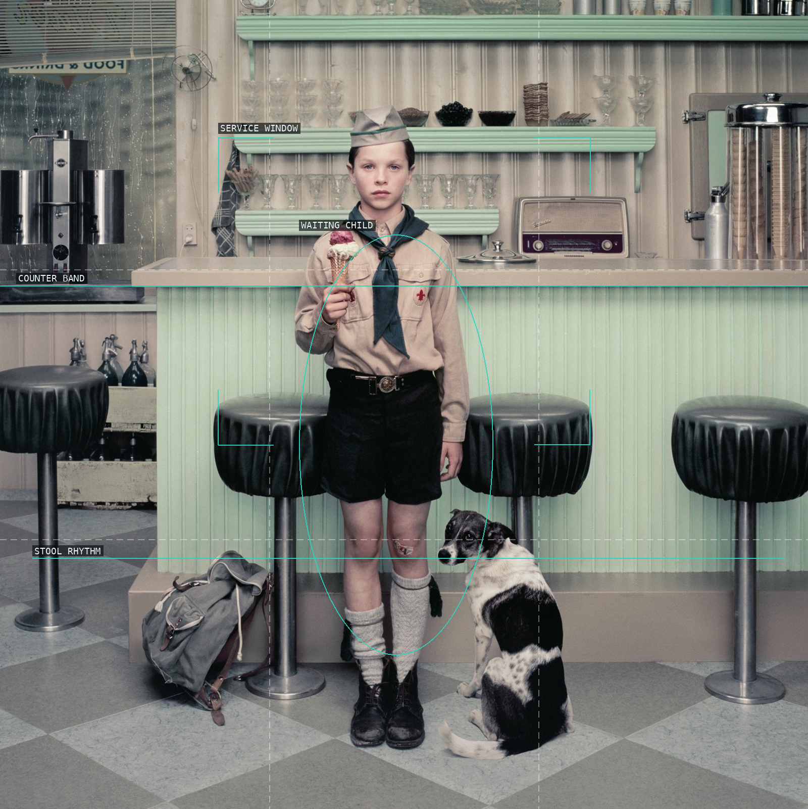
01-rain-ice-cream-parlor
Stools and service window contain a waiting child.
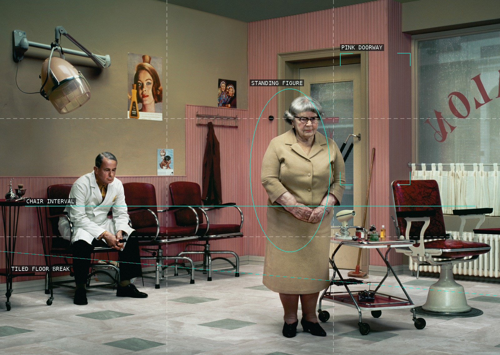
02-rain-hairdressers
Salon stations alternate with a central waiting figure.
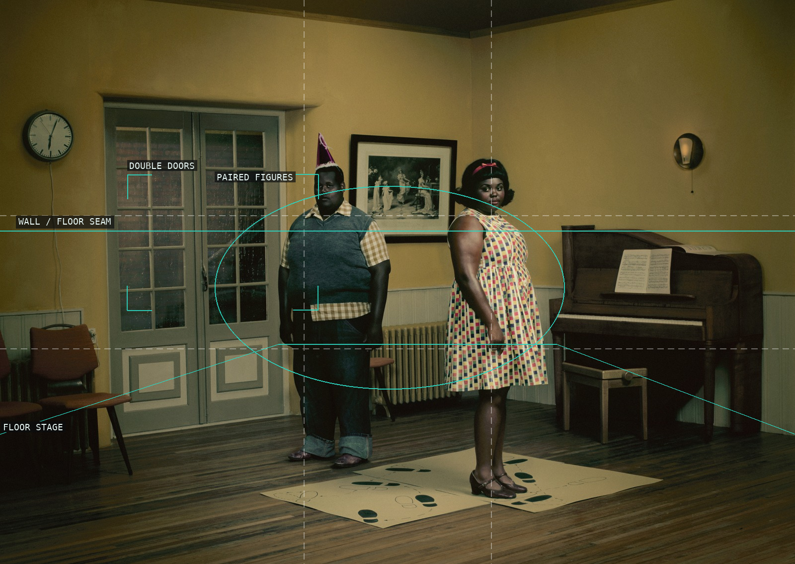
03-rain-dancing-school
Doors, floor, and paired figures make a shallow stage.
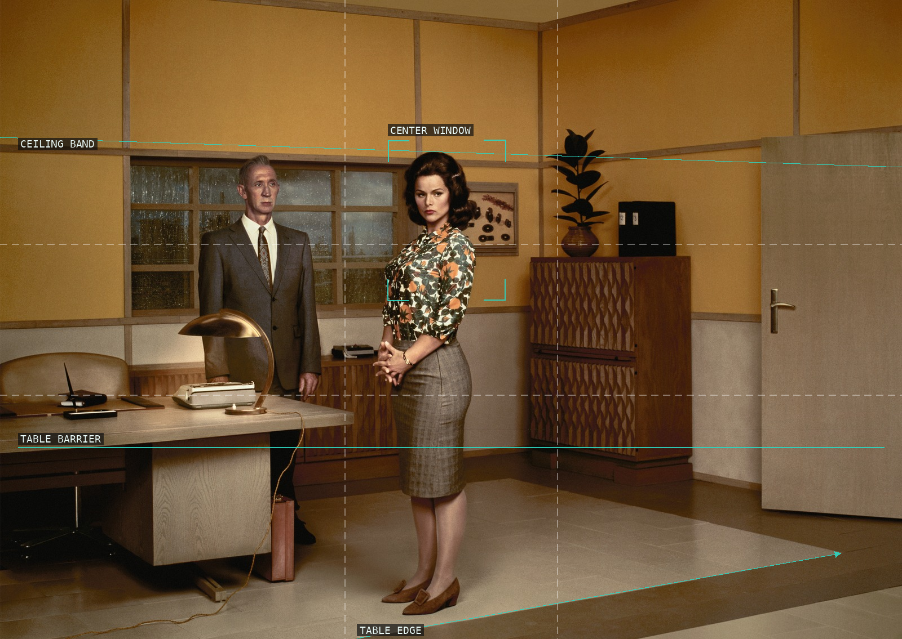
04-rain-boardroom
Table edge and window divide an institutional room.
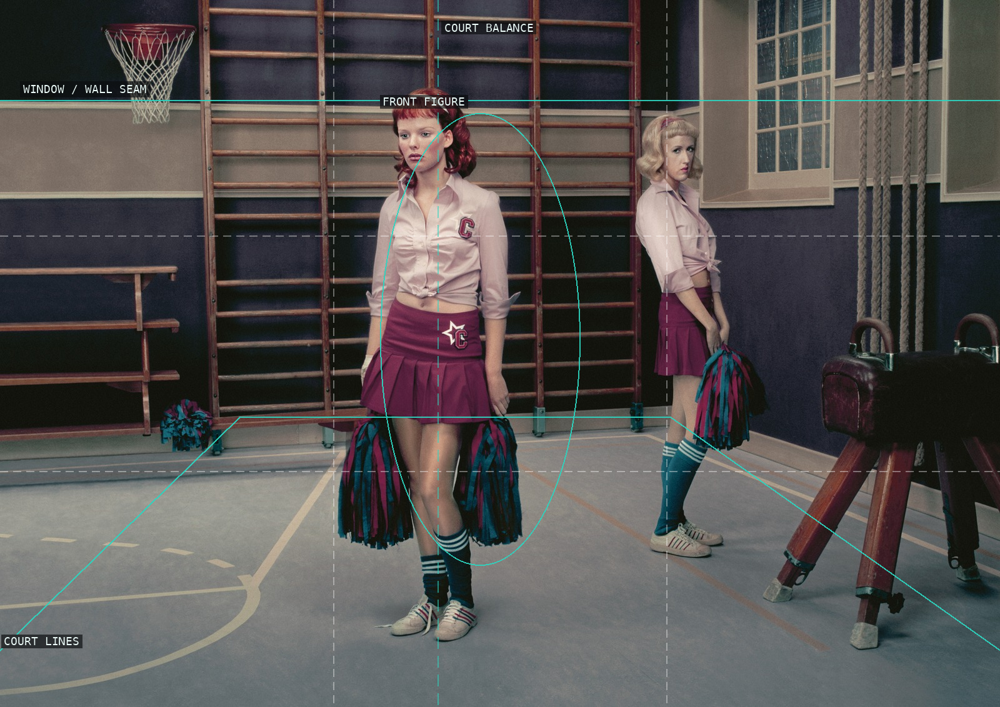
05-rain-gym
Court markings suspend the two figures in a display.
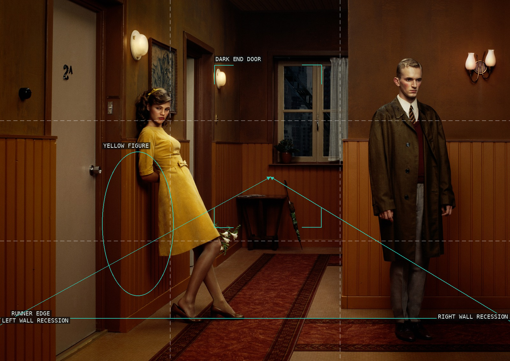
06-hope-hallway
Receding walls carry attention past the yellow figure.
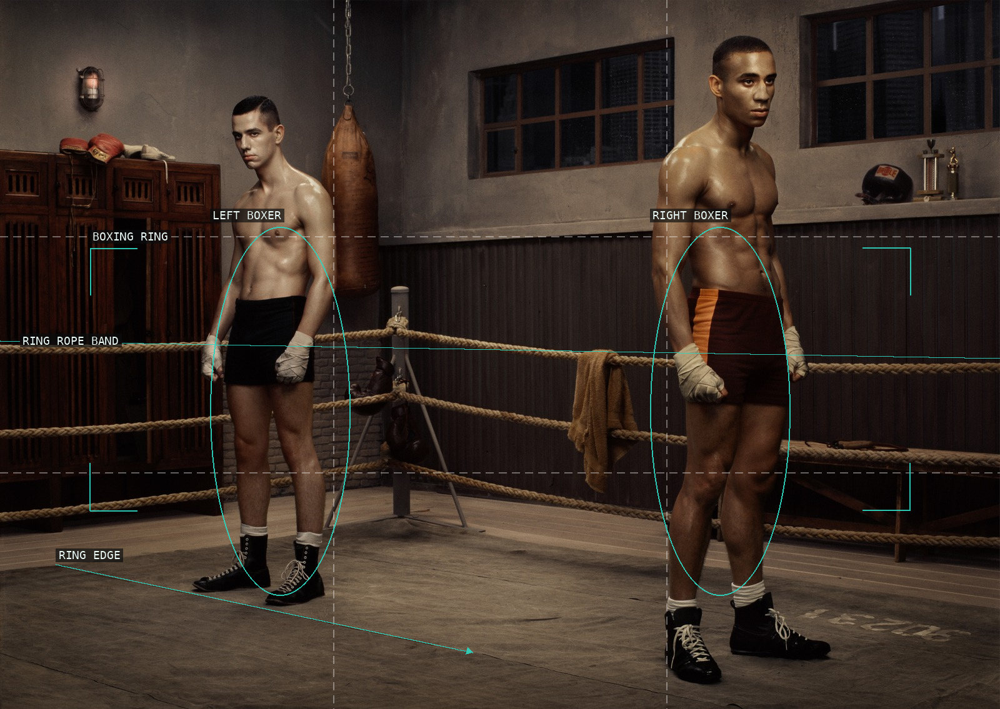
07-hope-boxing-school
Ring ropes compartmentalize two distant boxers.
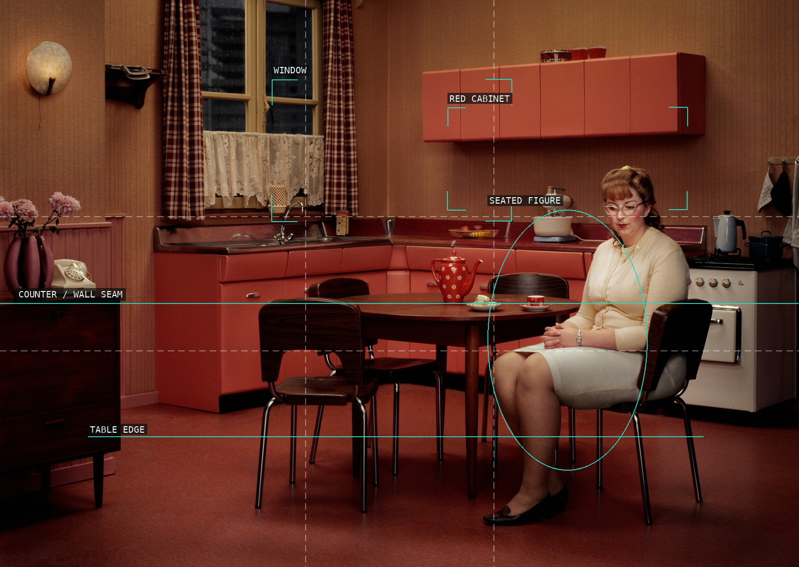
08-hope-kitchen
Fixtures turn the kitchen into a boxed stage.
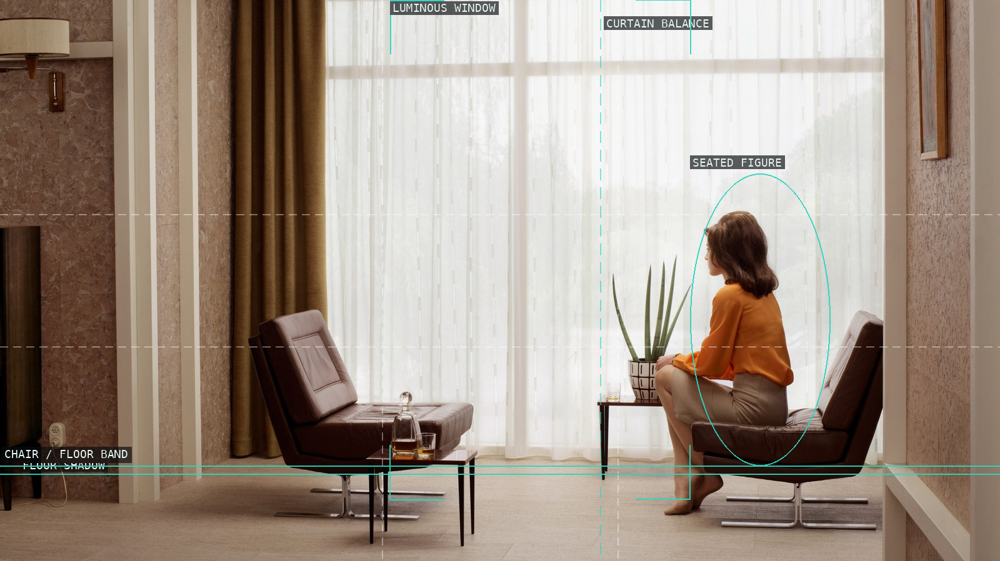
09-grief-caroline
A window field dwarfs the seated figure.
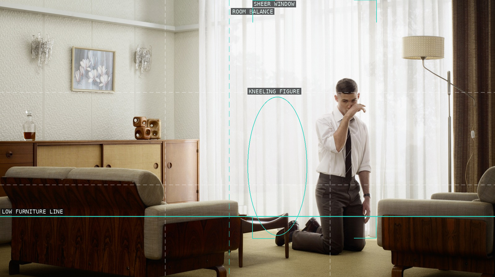
10-grief-troy
Furniture and sheer light ration a large room.
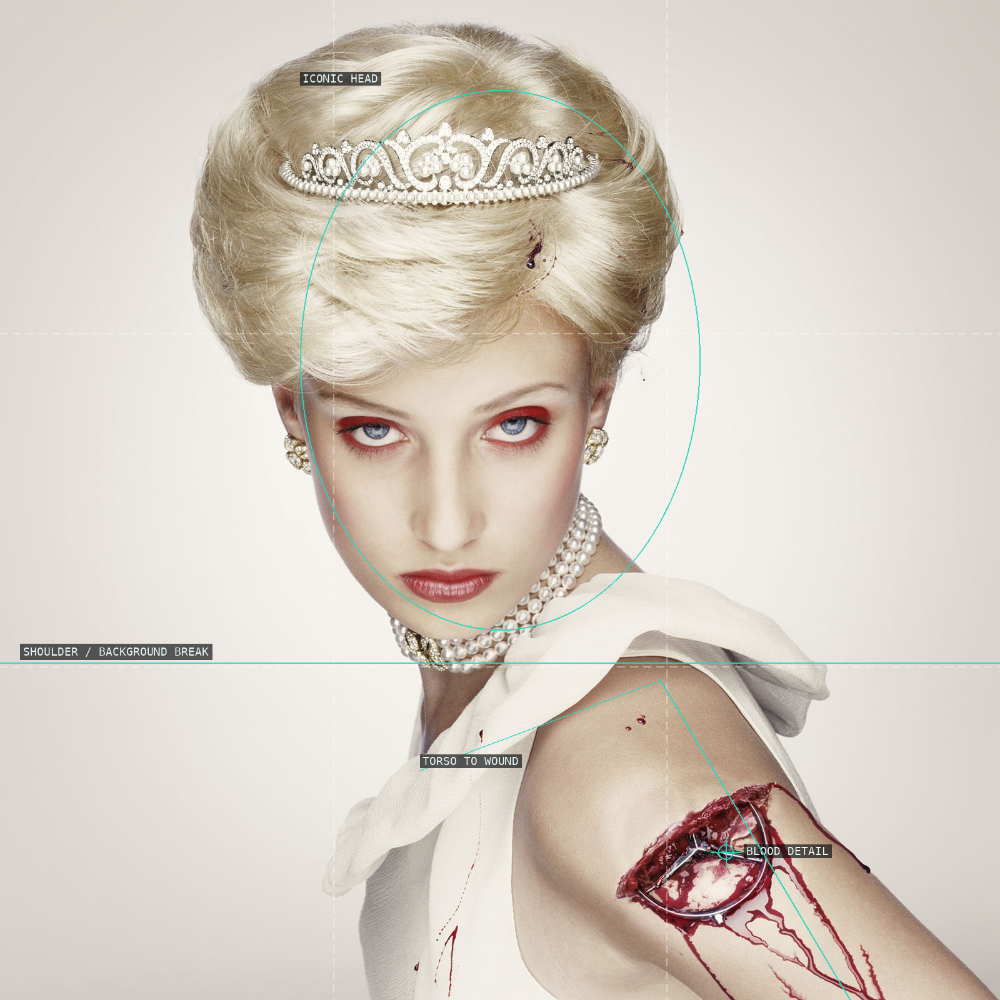
11-royal-blood-di
A frontal portrait concentrates pressure at a wound detail.
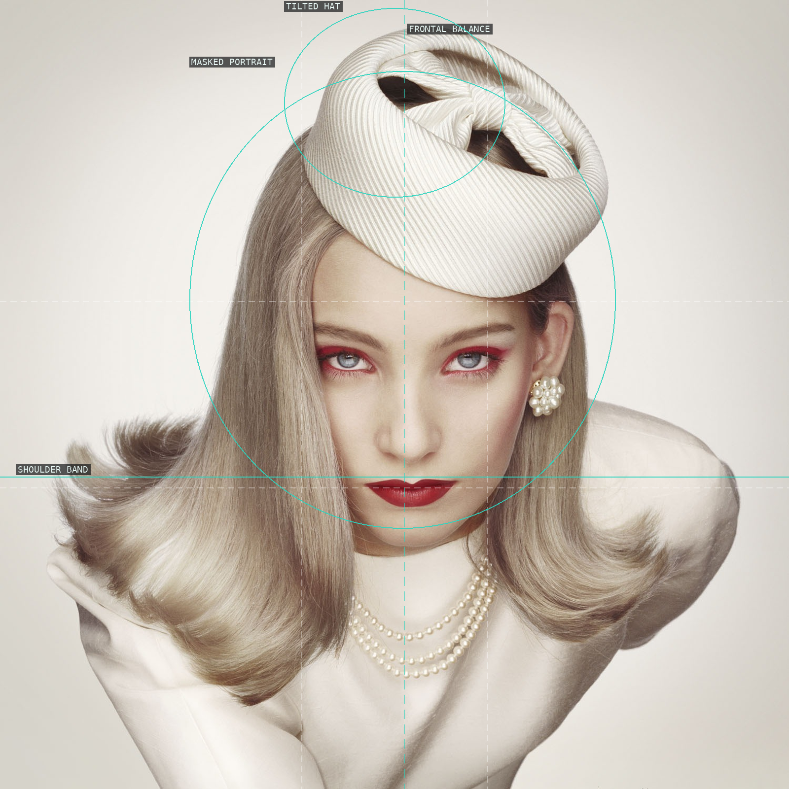
12-royal-blood-jackie-o-1229
A tilted hat unsettles frontal balance.